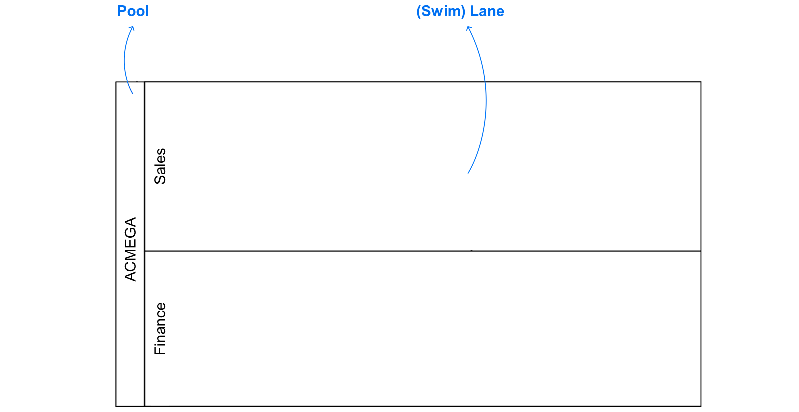
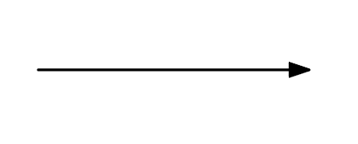
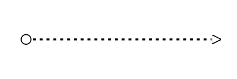
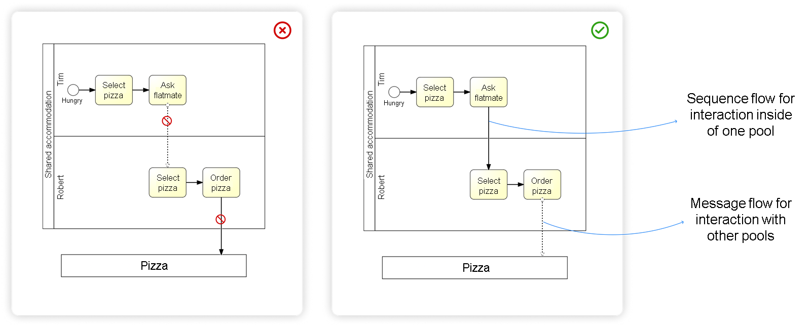
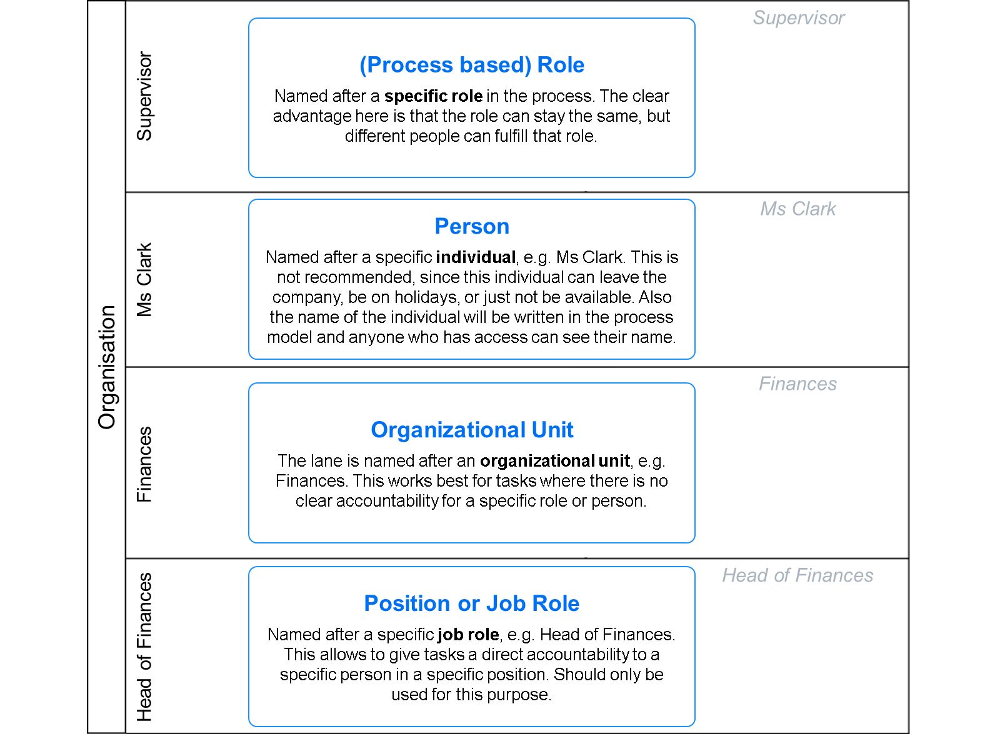

Pools & Lanes
What is a Pool?
A pool represents a participant in a business process, typically an organization or a role. It acts as a container for a complete process.
- Contains one complete process
- Represents a process participant or organization
- Can interact with other pools via messages
- Can be collapsed or expanded
What are Lanes?
Lanes are sub-partitions within a pool that extend the entire length of the pool. They represent different roles or departments within an organization.
- Organizes activities by role or department
- Shows who is responsible for activities
- Can be nested for complex organizations
Lane and Pool
Simple lane structure showing role separation

Sequence Flows
Types of Flows
Flows connect elements in a process and show the sequence of activities.
Normal Flow
Standard sequence flow showing the default path

Message Flow
Communication between pools/participants

Usage
Sequence Flow for Normal Flow Within the Pool Message Flow is for external Pool and also for throwing and catching message events

Naming Conventions
Naming Guidelines
Sequence Flow Naming
Use clear conditional statements for sequence flows
